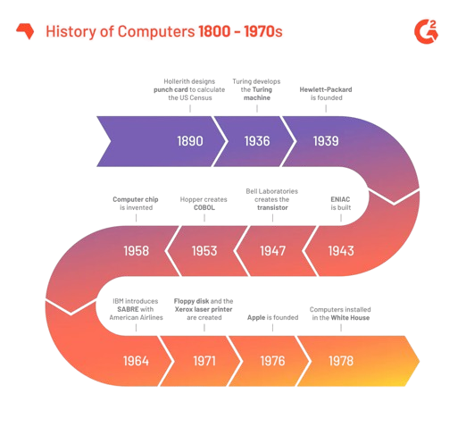

.jpg)

HISTORY OF COMPUTER
The history of computers traces a remarkable evolution from early mechanical devices to cutting-edge digital and quantum systems. Beginning with John Napier’s Napier Bones (1617) and Blaise Pascal’s Pascaline (1642), the journey advanced through Charles Babbage’s Difference Engine and Analytical Engine (1822), laying the foundation for modern computing. Key milestones include Alan Turing’s theoretical Turing Machine (1936), the development of ENIAC (1943), and the invention of the transistor (1947). The 1960s-70s saw the advent of personal computers with IBM’s disk storage (1962) and Apple’s iconic products (1976, 1977). The 1980s-90s introduced pivotal technologies like the Macintosh (1984), Windows (1995), and Google (1996), culminating in the 2000s with innovations such as the iPhone (2007) and cloud computing (2006). Recent advancements include the Frontier exascale supercomputer (2022), AI-driven tools like ChatGPT (2023), and next-generation PCs, illustrating the continuous impact of computing on technology and society.
While that’s how the story starts, it’s certainly not where it ends. Let’s explore the history of computers.
|  |
Early Developments (1600s-1800s)
1600s: The concept of analog computers emerged, with John Napier's Napier Bones (1617) for multiplication and division, Blaise Pascal’s Pascaline (1642) as the first automated calculator, and Gottfried Wilhelm Leibniz’s Stepped Reckoner (1673) improving on Pascal's design.
1800s: Joseph Marie Jacquard’s loom (1801) used punch cards, an idea later adopted by early computers. Charles Babbage invented the Difference Engine (1822) and the Analytical Engine (1822), the latter capable of general-purpose calculations. Ada Lovelace wrote the first computer program (1840). Herman Hollerith created the punch card system for the 1880 U.S. census (1890), leading to the foundation of IBM.
Early 20th Century Innovations (1900s-1950s)
1930s: Alan Turing proposed the Turing Machine (1936), foundational for modern computing. J.V. Atanasoff and Clifford Berry developed the first electronic computer with memory (1941). Konrad Zuse created the Z3 (1941), and Alan Turing helped build the Bombe for code-breaking (1941).
1940s-1950s: Key developments included ENIAC (1943), the first general-purpose digital computer, UNIVAC (1951), the first commercially available computer, and the invention of the transistor (1947) by Bell Labs. The advent of assembly language (1947), the first high-speed electronic memory (1948), and the introduction of COBOL (1953) and FORTRAN (1954) programming languages shaped computing.
Computers and Technology Expansion (1960s-1970s)
1960s: IBM launched the 1311 Disk Storage Drive (1962), and the Atlas computer introduced virtual memory (1962). Douglas Engelbart’s prototype included a mouse and GUI (1964). Unix was created (1969), and the first personal computers appeared (1974).
1970s: The introduction of the floppy disk (1971) and laser printers (1971) marked significant advances. Apple’s first computers, the Apple I (1976) and Apple II (1977), were revolutionary. VisiCalc (1978), the first spreadsheet program, and WordStar (1979), a word processor, also emerged.
Personal Computing and Networking (1980s-1990s)
1980s: IBM launched its personal computer (1981), and Apple’s Macintosh (1984) popularized the GUI. The CD-ROM (1983) and early internet developments, like the first domain registration (1985) and Pixar’s founding (1986), marked the era. The release of Windows (1985) and the creation of the World Wide Web by Tim Berners-Lee (1990) further shaped computing.
1990s: Key developments included the rise of Google (1996), the introduction of Windows 95 (1995), and the launch of the iMac (1998). Wi-Fi became mainstream (1999), and significant advances in mobile computing and the web occurred.
Modern Era (2000s-Present)
2000s: Innovations included the release of the USB flash drive (2000), the first camera phone (2000), and the iPhone (2007). Social media and cloud computing expanded, with services like YouTube (2005) and Amazon Web Services (2006) gaining prominence.
2010s: Key developments included the release of Windows 10 (2015), the creation of the first reprogrammable quantum computer (2016), and the introduction of iPadOS (2019).
2020s: Recent advancements include the Frontier exascale supercomputer (2022), ChatGPT-powered Bing (2023), and the AI PC with Intel Core Ultra (2023), reflecting ongoing innovation in computing and artificial intelligence.
This overview captures the evolution of computers from early mechanical devices to advanced digital and quantum systems, highlighting key technological milestones and their impact on computing and society.